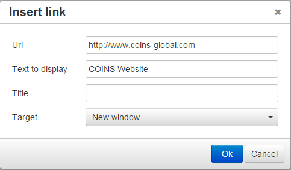

Help Text - Additional Information
Links
To provide a link to an HTML file or website (where url is the address of the file or website):
- Open the help text for editing (see Customing Help Text).
- Click .
- Enter the URL of the file or website, and the text to use as the link.

- If you want to display the file or website in a new window, select New Window in the Target drop-down.
- Click OK.
- Save the nugget.
Related fields
By default, if help text is specified for a field, displays the same text for "read only" and "report selection" versions of the field. These fields have names that begin with RO_ and RS_. So if a screen includes the field RO_avm_name, will show the help text for avm_name, unless help for RO_avm_name also exists.
User access to fields
only displays help for fields that the user has access to, so if a field does not appear on the user's screen because they are not allowed access to that field, the help for that field will not appear either.
Showing names of help fields and functions
You can display the names of fields and functions on the help screen. Type &helpMode=prompt at the end of the URL in the Address box and press Return. This re-loads the module, and the help frame shows the field and function names in brackets.
The field names are the names of the fields in the help - in some cases these are different to the actual fields on the screen (for example, the help may show the help for a related field). The "COINSInfo" screen shows the actual fields that are used - see
Technical Help.